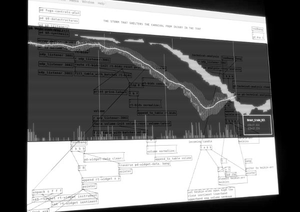

The Storm That Shelters the Carnival from Injury in the Tent is a software installation which brings a viewer closer to volatility and unpredictability of global financial forces. It uses visual data structures and spectral sound synthesis derived from life market feeds. The title of the work plays with political buzzwords that are used to convince masses about an urgent necessity of defeating exterior threads.

Apart from offering phenomenological insights into a nature of an economical abstraction, the installation poses questions concerning cultural and socioeconomic potentiality that emerges at the meeting of fine arts and open-source movement.
Nowadays, a global economic turbulence is indiscernible from an environmental and political one. Any disturbed state that they create harshly affects these on its surface. As we must adapt to everlasting instability, the art should do the same. A work of art has been a powerful emancipation device beyond its aesthetic facets since its reinvention by 20th century avant-garde.
Pure-data, which is lingua franca of a computer music and an audio art, is used in a way that blurs a distinction between trading instruments and these of a radical music. The installation implements many financial indicators well known from trading floors in financial centers around the world and therefore it could be treated as genuine assistance in undertaking financial speculations.
Real-time market feeds, software installation, dimension varies
Idea and realisation © Przemyslaw Sanecki 2015-16